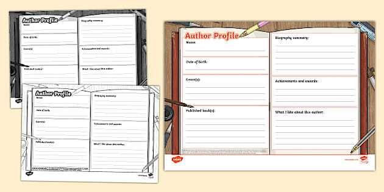

Texto

No, don't write as if it were for a textbook. Write as if you were them. Use 'I,' use their feelings. If Shakespeare were sad about his sexual condition, what `copy´ would he put on his photo?🤔📸?
You'll need to create the author's biography and a total of six posts or entries for their Instagram profile. You'll simulate the profile using an application like Canva. Now, you already know, as you saw in the previous steps, that you'll have to create the biography and you know what information it should include, but what should you keep in mind for the different posts? Take good note, because these are the things you'll need to consider:⬇️
📖 Literary work
-Mention a specific work, any one you like.
-Personal commentary on this: year of publication, plot, whether it received any awards...
🧠 Main literary theme
-Love, death, injustice, identity, the passage of time, etc. developed.
🏛️ Historical or social context
-The situation of the time. Develop and recount in the first person how he/she might have felt, what he/she experienced...
-Social problems reflected in his/her work
👥 Relationship with literary movements
-To which literary movement does it belong?
🌍 Personal life or identity
-Family, friends, culture, landscape, exile, emigration…
✍️ Free publication
-Personal reflection
-Adapted fragment (not copied literally)
-Protest or poetic message